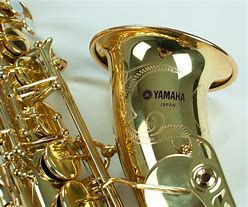
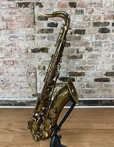
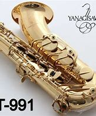
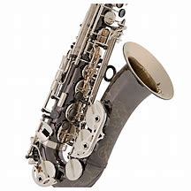
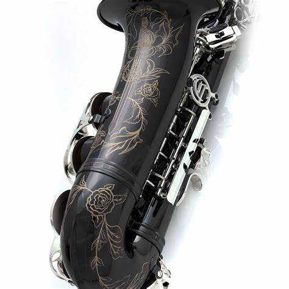
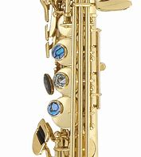

Marcas de Saxofones
las marcas de saxofones dependen mucho de la calidad y de los materiales que utilizan para su elaboración.Lista de Marcas de Saxofones:
Yamaha
el saxofón yamaha es una de las mejores marcas de saxofones considerada por un sonido limpio y brillante
Historia de El Saxofón yamahaSelmer
Los Saxofones Marca Selmer son los preferidos por la mayoría de intérpretes profesionales clásicos.
Historia del Saxofon SelmerYanagisawa
Si buscas un saxofón para estudiante de alta calidad o un instrumento profesional de alto nivel, estos saxofones japoneses de Yanagisawa te ofrecerán una magnífica experiencia de interpretación.
Historia de Los saxofones yanagisawaKeilwerth
El saxofon Marca Keilwerth permite al saxofonista dar forma a su sonido individual, creando un estilo propio y poder asi expresar con la música todo un rango de emociones.
historia de los saxofones keilwerthCannonball
En el mundo de la música, los saxofones Cannonball destacan por su calidad y sonido excepcional. Estos instrumentos de viento son reconocidos por músicos de todo el mundo por su versatilidad y potencia musical.
Historia de los Saxofones CannonballP.Mauriat
Como buen saxofón, los resonadores de los saxofones P.Muriat son de metal, ejerciendo una buena respuesta en la emisión. Las chimeneas son sacadas del mismo cuerpo con la característica de que sus terminaciones.
Historia de los saxofones P.Muriat